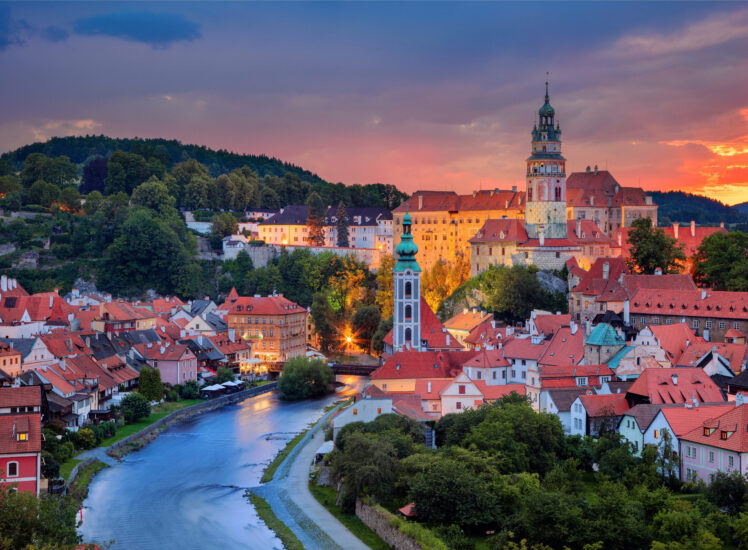
9 h
Autem
Český Krumlov a zámek Hluboká
Zámek Hluboká · Český Krumlov
- Památky
- Příroda
od11 407 KčZa vůz · až 4 osoby, větší skupiny Staria až 8návrh
Hotový výlet, nebo vlastní trasa. Cena za celý vůz – Tesla až pro 4, Staria až pro 8 osob.návrh
Soukromé jednodenní a dvoudenní výlety z Prahy autem s anglicky mluvícím řidičem, na přání i s průvodcem – po Česku i do Německa, Rakouska a dalších sousedních zemí. V Praze nabízíme pěší prohlídky s licencovaným průvodcem.
Cena je za celý vůz s řidičem – čím víc vás je, tím méně na osobu. Do 4 osob je levnější Tesla Model Y, pro 5–8 osob Hyundai Staria.návrh

9 hZámek Hluboká · Český Krumlov
od11 407 KčZa vůz · až 4 osoby, větší skupiny Staria až 8návrh
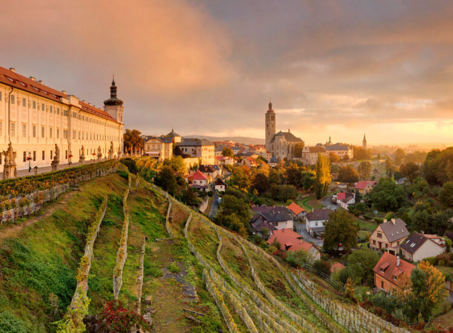
4 hSedlecká kostnice · Chrám sv. Barbory
od5 354 KčZa vůz · až 4 osoby, větší skupiny Staria až 8návrh
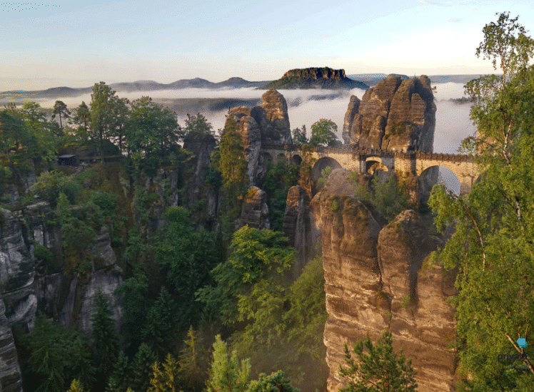
8 h 30 minPravčická brána · Bastei (Německo)
od9 884 KčZa vůz · až 4 osoby, větší skupiny Staria až 8návrh
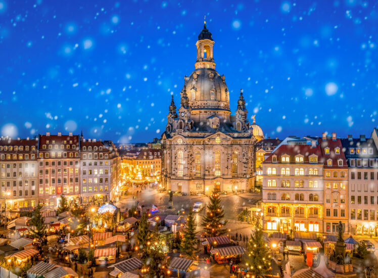
8 h 30 minPirna · Drážďany
od9 982 KčZa vůz · až 4 osoby, větší skupiny Staria až 8návrh
 7 h 30 min
7 h 30 minKarlovy Vary · Hrad Loket
od9 061 KčZa vůz · až 4 osoby, větší skupiny Staria až 8návrh
 5 h 30 min
5 h 30 minPražský hrad · Nový Svět · Petřín
8 500 KčCelá skupina · až 4 osoby · průvodce v ceně
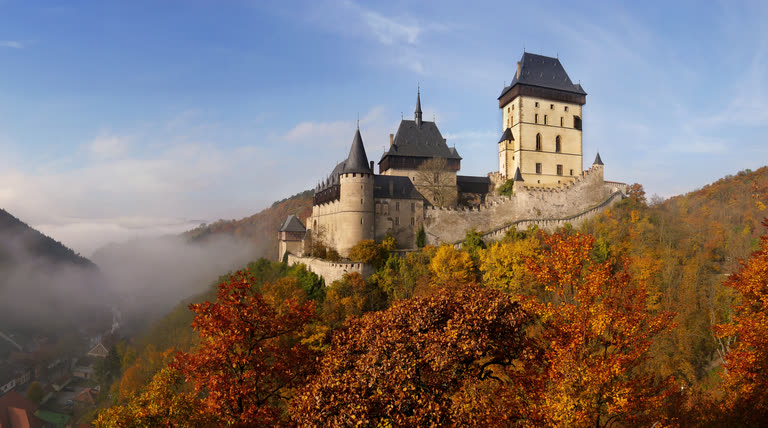
5 hHrad Karlštejn · Lom Velká Amerika
od3 282 KčZa vůz · až 4 osoby, větší skupiny Staria až 8návrh
1 / 7
Všech 26 výletů z PrahyPoznámka k náhledu: „od X Kč za vůz“ na kartách je cena Tesly Model Y (RF 26. 10., O4: bez přepínače vozu, cena Starie je na stránce výletu a v plánovači). Zde ukázkově 0,8 × cena Starie zaokrouhlená na koruny; v produkci ji počítá server stejnou funkcí se sazbami Tesly (27 Kč/km, 5,6 Kč/min, 80 Kč/zastávka; nocleh a minimum se nenásobí) – kontrolně Kutná Hora 5 319 Kč, Český Krumlov 11 335 Kč, Karlštejn 3 266 Kč (×0,8 by dalo 5 354 / 11 407 / 3 282).
Vyberte místa a v plánovači hned uvidíte trasu, čas i cenu za celý vůz.
Zadejte ho do plánovače, nebo nám ho napište. Řízení, navigaci a domluvu v angličtině zařídíme.
Hrady, příroda, menší města a místní restaurace podle vašich zájmů.
Vyzvedneme vás, kde potřebujete, a cenu za celý vůz znáte předem.
Začněte místem, které chcete vidět – trasu a cenu za vůz vám spočítá plánovač:
 1 h 18 min
Kutná HoraStříbrné město UNESCO · kostnice
1 h 18 min
Kutná HoraStříbrné město UNESCO · kostnice
 2 h 22 min
Český KrumlovStaré město UNESCO v zákrutu Vltavy
2 h 22 min
Český KrumlovStaré město UNESCO v zákrutu Vltavy
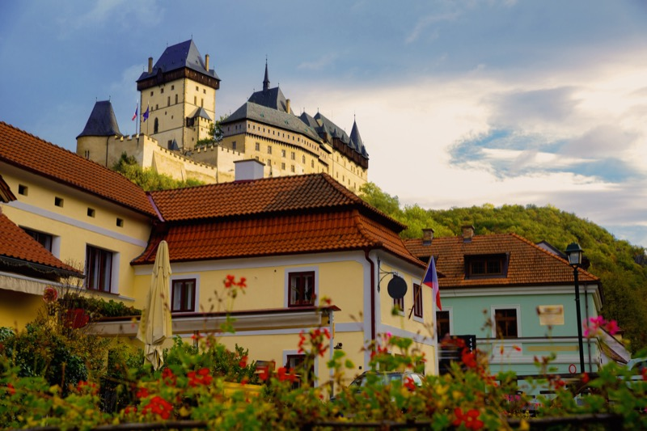
47 min Hrad KarlštejnHrad Karla IV. pro korunovační klenoty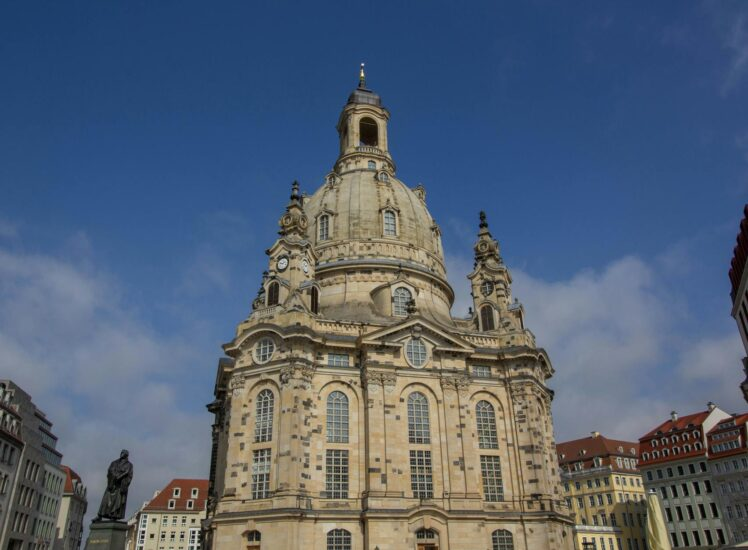
1 h 52 min DrážďanyBarokní staré město na Labi 1 h 48 min
Karlovy VaryLázeňské kolonády a horké prameny
1 h 48 min
Karlovy VaryLázeňské kolonády a horké prameny
 2 h
České ŠvýcarskoNejvětší pískovcová brána Evropy
2 h
České ŠvýcarskoNejvětší pískovcová brána Evropy
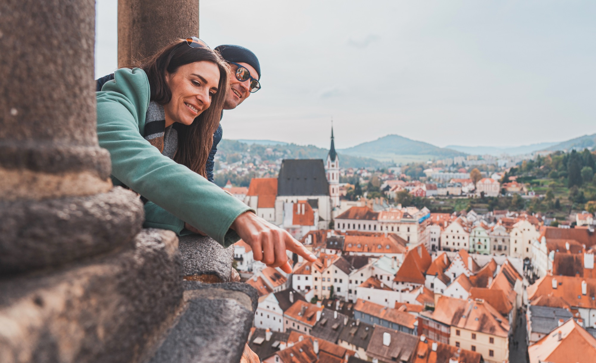
Řidič se o vás celou cestu postará: poradí, pomůže a cestou zavolá, kam bude potřeba – restaurace, zajímavosti, výhledy.
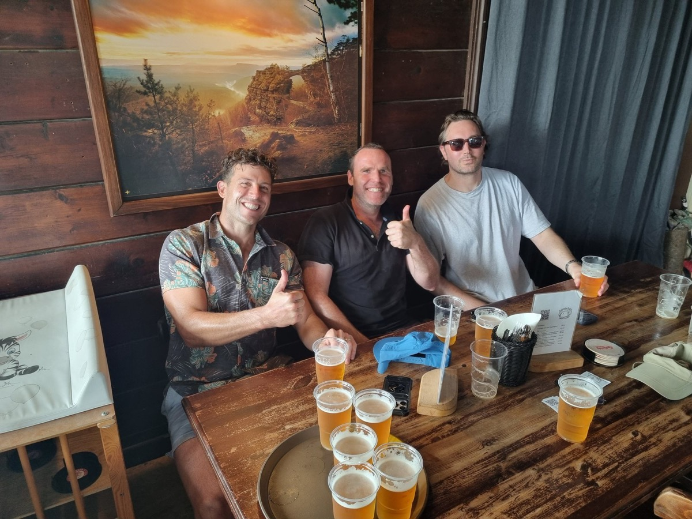
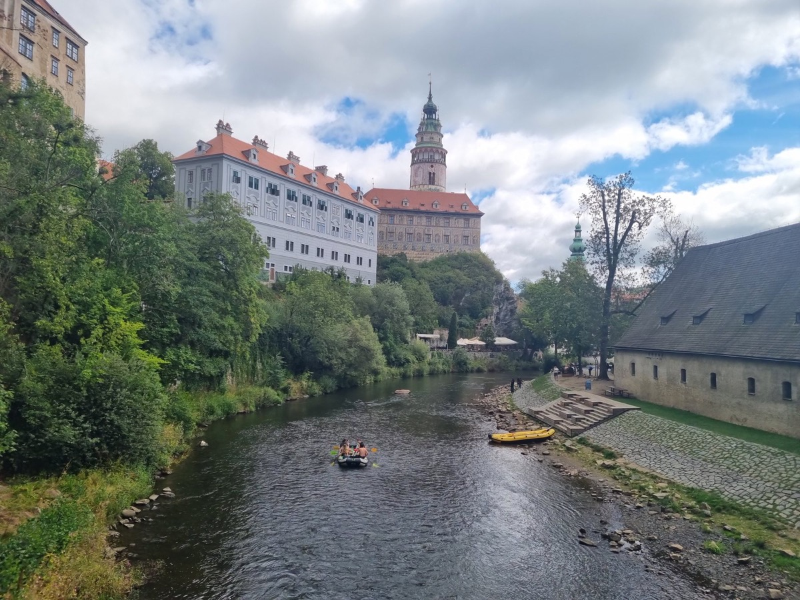
Na každý výlet autem z Prahy s vámi jede místní anglicky mluvící řidič, který zná místa, kam jedete. Cestou poradí, co stihnete vidět, kde jsou nejlepší vyhlídky a kde se dobře najíst.
Řídí, cestou poradí, pomůže se vstupenkami a obědem.
Je s vámi pěšky na zastávkách a provede vás po místech jako místní.
Odborný výklad: čeká na vás na místě, nebo jede celý den s vámi autem.
Co dělá řidič? Řídí, cestou poradí, pomůže se vstupenkami a obědem a je po ruce, kdykoli ho potřebujete. V ceně. Mluví česky a dobře anglicky. Není licencovaný průvodce a nepodává výklad k historii a památkám.
Co přidá řidič-průvodce? Je s vámi pěšky po celou dobu zastávek a provede vás po místech – jako místní, ne jako licencovaný průvodce. 200 Kč za každou hodinu výletu, připočte se k ceně za celý vůz.
Kdy se hodí licencovaný průvodce? Na odborný výklad ve městech a u památek. Licencovaného průvodce zajistíme na přání: čeká na vás na místě, kde je to možné, nebo jede celý den s vámi autem (pak jede až 7 hostů ve Starii, 3 v Teslenávrh). Pošleme cenu na váš termín a obvykle potvrdíme do 24 hodin; když průvodce nenajdeme, výlet jede beze změny a za průvodce nic neplatíte. Průvodci platíte přímo. Interiéry zámků provázejí zámečtí průvodci.
Nevíte? Rezervujte s řidičem – řidiče-průvodce přidáte při rezervaci, licencovaného průvodce na přání.
Jak řidiče vybíráme: řidiči jsou pečlivě vybraní, dodržují naše zásady bezpečné přepravy a jsou pravidelně kontrolovaní. Naše řidiče dobře známe, jezdí s námi dlouhodobě. Každý nový řidič projde vstupním školením v bezpečné jízdě a péči o hosty a všechny řidiče pravidelně hodnotíme.
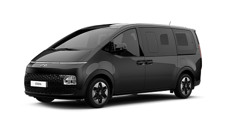
Dva vozy: Hyundai Staria 4×4 až pro 8 osob, nebo Tesla Model Y až pro 4návrh
Staria: místo i na zavazadla, klimatizace, kožená sedadla, USB a voda zdarma. Tesla Model Y: levnější, nejvýš 4 zavazadla a 2 dětské sedačky. Vůz zvolíte v plánovači.návrh
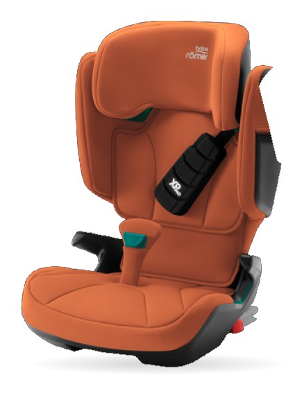
Bezpečnost a pohodlí
Dětské sedačky Britax Römer zdarma, moderní bezpečnostní systémy, řidiči proškolení podle našich zásad.
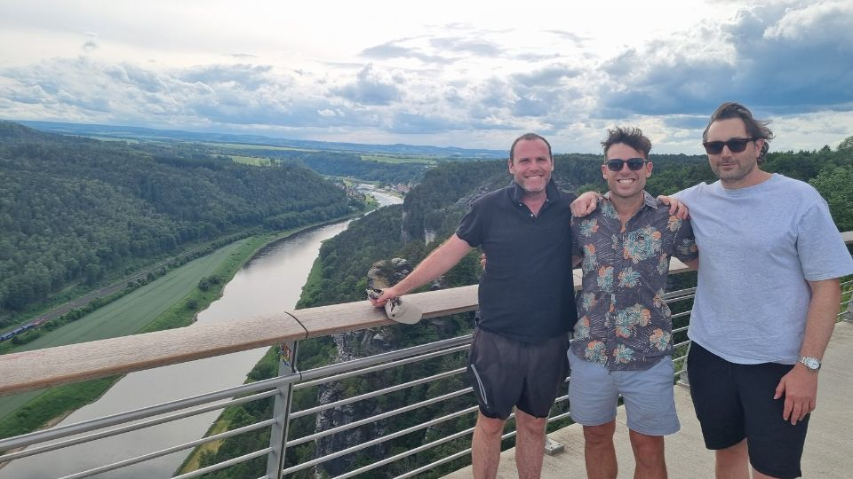
Jedna cena za celý vůz
Cenu znáte předem a nemění se podle počtu osob. Platíte až řidiči, hotově nebo kartou.
Typický jednodenní výlet 5 000–14 000 Kč za celý vůz.
Kolik stojí soukromý výlet+200 Kč za hodinu výletu, přidáte při rezervaci.
Na místě, nebo celý den s vámi autem (pak až 7 hostů ve Starii, 3 v Teslenávrh). Cenu pošleme na váš termín.
Britax Römer pro všechny věkové skupiny, v Tesle Model Y nejvýš 2návrh.
Jaké sedačky máme
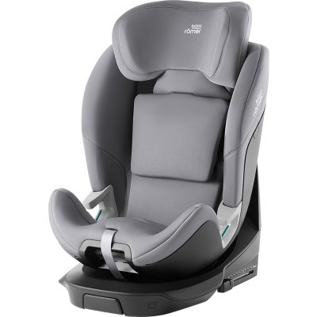
Od narození do 7 let · do 125 cm
Otočná o 360°, do 4 let (105 cm) proti směru jízdy, ISOFIX s podpěrnou nohou.
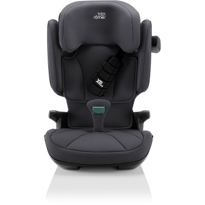
Od 3,5 do 12 let · 100–150 cm
Pro starší děti, s nastavitelnou opěrkou hlavy.
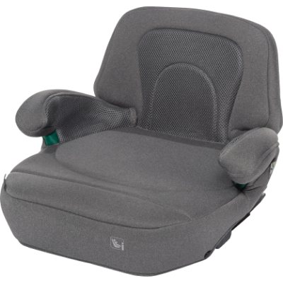
Do 12 let · 125–150 cm
Norma i-Size, upevnění ISOFIXem a pásem vozu, nebo jen pásem.
Věk dětí uveďte při rezervaci.
Vy rozhodujete, kde zastavit a jak dlouho. Cenu za celý vůz uvidíte hned.
Výlety z Prahy: TOP 12 tipů na rok 2026
Začněte tady
 Kolik stojí soukromý výlet z Prahy?Jedna cena za celý vůz až pro 8 osob: co je v ceně a kolik stojí hotové výlety.
Kolik stojí soukromý výlet z Prahy?Jedna cena za celý vůz až pro 8 osob: co je v ceně a kolik stojí hotové výlety.
 Řidič, nebo průvodce v Praze: jaký je rozdíl?Co dělá anglicky mluvící řidič na výletě a co přidá licencovaný průvodce.
Řidič, nebo průvodce v Praze: jaký je rozdíl?Co dělá anglicky mluvící řidič na výletě a co přidá licencovaný průvodce.
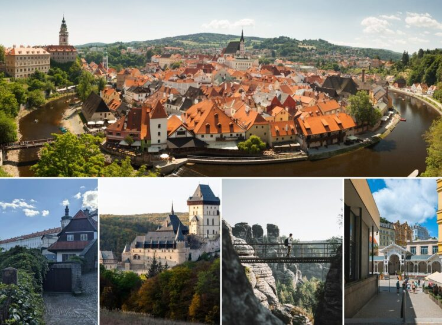
5 nejlepších jednodenních výletů z Prahy — srovnání (2026)Krumlov, Kutná Hora, Drážďany a další vedle sebe: čas, cena a pro koho. Praha v zimě: prosinec, leden a únorZimní otevírací doby, masopust 2027 a výlety, které fungují i v mrazu.
Praha v zimě: prosinec, leden a únorZimní otevírací doby, masopust 2027 a výlety, které fungují i v mrazu.
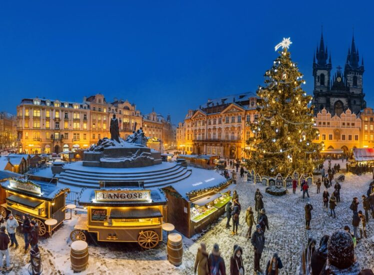
Vánoční trhy v Praze 2026: termíny, jídlo a tipyKde a kdy trhy jsou a co ochutnat.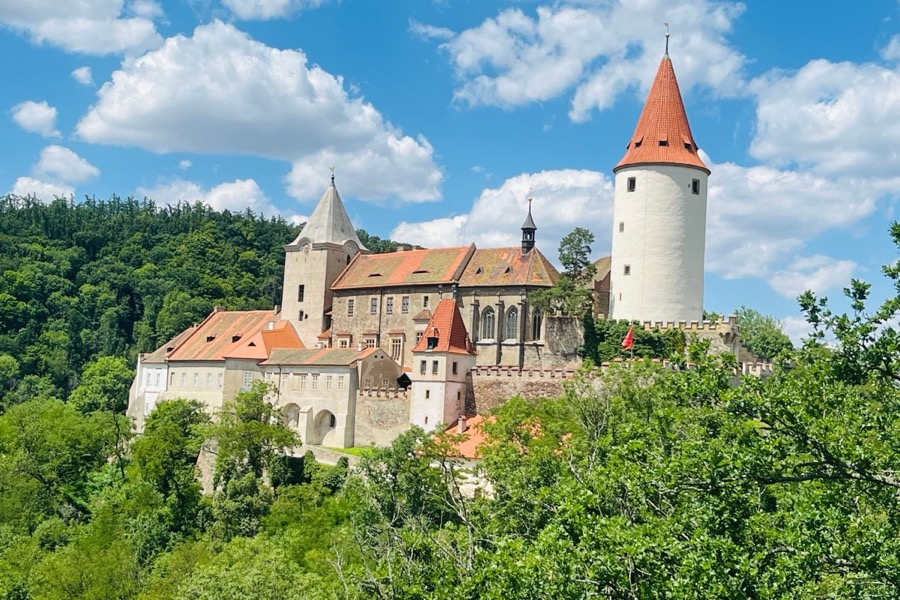
Výlet na hrad Křivoklát z Prahy autem s řidičem: průvodce 2026Hrad nad lesy Berounky, hodinu jízdy z Prahy.